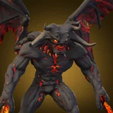
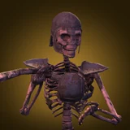

Unit
Spire Colossus
Spire Colossus is a tier 5 tank unit of the Stoneborn, Ravager and Warden alliances, and an ace.
Spire Colossus is a tier 5 (Legendary) tank unit. It costs 5 gold in the shop and carries the Stoneborn, Ravager and Warden alliances. It is an ace.
Ability
Colossal Sweep
Sweeps its stone fists through all adjacent enemies, dealing pure damage.
- Cast
- When mana is full. Casting spends all of it.
- Cast point
- 0.3 seconds from the start of the cast to its effect.
- Targets
- All enemies within 1 cell of itself.
- Deals 250 / 450 / 800 pure damage to the targets (values per star).
Full details are on the Colossal Sweep ability page. See Mana and casting for how mana is gained.
Stats
| Stat | 1 star | 2 stars | 3 stars |
|---|---|---|---|
| Health | 3,000 | 6,000 | 12,000 |
| Attack damage | 50 to 60 | 100 to 120 | 200 to 240 |
| Seconds per attack | 1.5 | 1.5 | 1.5 |
| Attacks per second | 0.67 | 0.67 | 0.67 |
| Wind-up before the hit (seconds) | 0.5 | 0.5 | 0.5 |
| Average damage per second | 36.7 | 73.3 | 146.7 |
| Attack range (cells) | 1 | 1 | 1 |
| Armour | 15 | 15 | 15 |
| Magic resistance | 0% | 0% | 0% |
| Maximum mana | 50 | 50 | 50 |
| Move speed | 295 | 295 | 295 |
| Seconds to cross one cell | 0.43 | 0.43 | 0.43 |
| Projectile speed (cells per second) | None, hits at once | None, hits at once | None, hits at once |
Seconds per attack is the time from the start of one attack to the start of the next, before any attack speed bonus. Average damage per second is the middle of the damage range divided by the seconds per attack, before armour, bonuses and critical strikes.
Cost, upgrades and selling
3 copies of Spire Colossus at the same star level combine into one copy of the next star level, up to 3 stars. See Star upgrades for how combining works and Gold and income for gold.
| 1 star | 2 stars | 3 stars | |
|---|---|---|---|
| Copies needed | 1 | 3 | 9 |
| Gold to buy those copies | 5 | 15 | 45 |
| Sell value in gold | 5 | 7 | 9 |
| Copies returned to the pool when sold | 1 | 3 | 9 |
The shared pool holds 10 copies of Spire Colossus for all players together, as it does for every tier 5 unit. See The shared pool and The shop.
Ace effect
Spire Colossus is the ace of the Warden alliance. Its ace effect is on while it stands on the board and at least one step of that alliance is active. See Aces.
In play, the effect applies to Spire Colossus itself:
- +30 armour
When your shop rolls a tier 5 unit, each unit of that tier is weighted by the copies of it left in the pool. While that alliance is active for you, the weight of Spire Colossus in that draw is 15% higher. See The shop.
Alliances
 Stoneborn race
Stoneborn race
Gargoyles and golems carved from the spire itself, hardened by every battle. Each Stoneborn unit permanently gains maximum health for every enemy it has killed this game, more at higher stars.
| Units needed | Effect |
|---|---|
| 2 | Stoneborn units: +10 / 20 / 30 maximum health for each enemy the unit has killed this match, up to +600 / 1,200 / 1,800 maximum health at 60 kills; kills are counted by the unit and carry over from round to round (values per star). |
| 4 | Stoneborn units: +40 / 80 / 120 maximum health for each enemy the unit has killed this match, up to +2,400 / 4,800 / 7,200 maximum health at 60 kills; kills are counted by the unit and carry over from round to round (values per star). |
 Ravager class
Ravager class
Brutes who break their foes’ will. A Ravager’s attack maims the target, dealing physical damage and reducing the target’s damage for 4 seconds.
| Units needed | Effect |
|---|---|
| 2 | When a Ravager unit lands an attack (at most once every 4 seconds), it deals 80 physical damage to the unit it hit and applies Maimed (Ravager, 2 units) (-30% attack damage) to the same target for 4 seconds. |
| 4 | When a Ravager unit lands an attack (at most once every 4 seconds), it deals 120 physical damage to the unit it hit and applies Maimed (Ravager, 4 units) (-50% attack damage) to the same target for 4 seconds. |
 Warden class
Warden class
Wardens of the spire gates. Wardens gain bonus armour.
How units are counted towards a step is explained under How alliances count.
Fights well with
These units share an alliance with Spire Colossus, so fielding them together works towards the same steps.


Other tier 5 units
The other tier 5 units. They cost the same and share the same tier odds. Within the tier, a unit with more copies left in the pool is offered more often, and an ace whose alliance is active for you more often still. See The shop and the Unit stat table.

Abyssal Archon Blood Matriarch
Blood Matriarch Cinder Wyrmrider
Cinder Wyrmrider Deep Basilisk
Deep Basilisk Duskmother
Duskmother Hourblade
Hourblade Mire King
Mire King
Soul Tyrant Spire Exemplar
Spire Exemplar